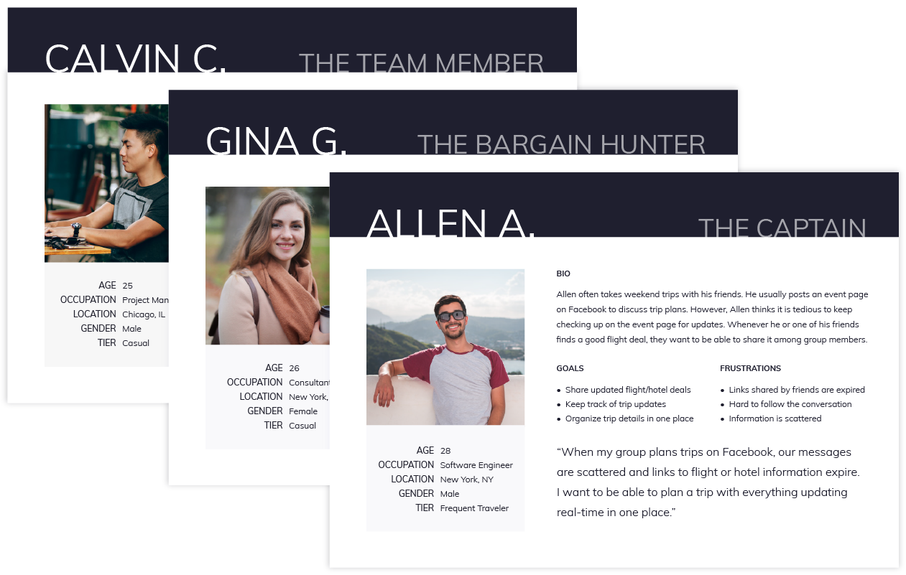

Getting Started
User Research - Group Travelers
To better understand how users typically book their trips, I surveyed 15 people in the age 20 - 30 demographic. The majority tends to plan trips for 2 or more people and use either email or Facebook as their current preferred method. According to the survey and interviews, the top five needs were the following:
| User Need |
% of Respondents |
| Ability to share a group travel itinerary |
73 |
| Ability to book the same flights and/or hotels |
73 |
| Enable price tracking |
80 |
| Ability to organize trips by name |
86 |
| An easy way to share and iscuss trip details with group members |
80 |
Users also reported many different methods for saving flight or hotel search results:
- "...bookmark it"
- "...e-mail it to myself"
- "...keep the tab open"
- "...take a screenshot"
- "...post the link on Facebook"
- "...copy and paste into my notes"
The Problem
Everyone researches and saves travel details differently, which complicates the way group members share search results and travel itineraries. From direct links and screenshots that become outdated to trip details being buried in off-topic conversations, the limitations of these current methods make group travel planning a cumbersome process. The primary design challenge therefore lied within the collaborative planning phase.
More Research
The Target Market
Along with the usual search engine attributes, users are eager for a travel app to offer the organizational and social aspects of FlyTabs to ease the group trip planning process. These are people who embrace social media platforms (like Facebook) but require much more when it comes to planning travel. From here I proceeded to design a solution with these
personas in mind.

The Competition
In terms of travel apps that offer both flight and hotel searches, Kayak, Expedia, TripAdvisor, and Skyscanner all lead the competitive space. Other apps such as TripAdvisor and Travefy help users create trip itineraries. My survey revealed that 86% of my respondents use Google Flights to search flight options, and 73% use Airbnb to book lodging. Below is a comparison of major features they currently offer along with features that FlyTabs would have:

My initial vision for FlyTabs was a travel app with the added convenience of Facebook Messenger integration to help users link directly to the content and discuss trip details. This was a start, but I needed to focus on creating a useful tool, not an app that added little value and a lot of noise in a world with this many popular travel apps.
The Solution
Eventually it was evident that an app that merges the collaborative aspects of social media along with the search and book functionalities of popular search engines was the ideal solution. According to the survey data, the ability to better organize and consolidate all flight and hotel suggestions with their corresponding conversations, the option to enable price tracking and voting mechanisms, and a comprehensive view of the group’s travel itinerary are all desirable features of the ultimate group travel planner.
Branding
The Look
The tool I envisioned was an intuitive, casual, and comprehensive experience in which users can toggle through different tabs on the navigation to see updated group trip information displayed concisely. Hence the name "FlyTabs" suited the product. For the palette, I chose a monochromatic purple color scheme to give the experience a relaxed and friendly tone.

As for the logo concept, I focused on one of the key advantages that FlyTabs provides: conversations regarding a particular trip stay within context of the item being discussed. After some
mind-mapping, I designed the logo as seen below.

A few preference tests and updates later, the final version of the FlyTabs logo was established!

Designing the Experience
User Flows and Site Map
With personas and user stories in mind, I mapped out the user flows for FlyTabs. From onboarding to creating a new trip to finalizing the travel itinerary, all steps were accounted for and prepped to create my first low-fidelity wireframes for FlyTabs.


With personas and user stories in mind, I mapped out the user flows for FlyTabs. From onboarding to creating a new trip to finalizing the travel itinerary, all steps were accounted for and prepped to create my first low-fidelity wireframes for FlyTabs.
Testing with Wireframes
Using Balsamiq and InvisionApp, I created low-fidelity wireframes and a clickable prototype for first round of usability testing. By testing early I capture areas of improvement and determine the MVP before developing the designs futher. I asked users to comment aloud as they went through several user flows guided by a script.
With this initial round of testing, I discoverd which tasks were easily completed and which ones were problematic:
Conduct a flight or hotel search
Book the reservation
Save a flight or hotel to a group trip
Locate the travel itinerary
Join and comment on the group trip
The results were crucial in helping me rethink some of the solutions to the fundamental problems I was trying to solve in FlyTabs, especially how to facilitate the group conversation better.

Challenges and Pivots
Testing with the Prototype
With the learnings from wireframe testing and branding completed, I created high-fidelity mocks and prototypes for my next round of usability testing. The most challenging part of this project was designing the best interface for the conversational aspect of this trip planning app. Originally, with the emergence of iOS messaging allowing apps like Evernote to feature message integration, I saw FlyTabs adopting the same function as the main way people can collaborate, especially since 100% of the users I interviewed already use Facebook or Facebook Messenger. Multiple rounds of testing later, it became evident that users preferred an in-app commenting system was the optimal approach. This eliminates the need to jump between apps and break up the conversation. Below is the evolution of the social aspect of FlyTabs.
Version 1
At first I tried a tab for a global commenting section within a particular trip. By making posts static, I imagined the possibility of collapsing or filtering the comments by flight or hotel. However, after testing and discussing with some engineers, we concluded that altough a sophisticated approach, an unfamiliar interface may not appeal to the typical user.
Version 2
Ultimately, I designed collapsible comments attached to each flight or hotel card. Under the appropriate tab and card, conversations stay organized. Overall the entire experience of saving, voting, and commenting feels more intuitive and unified.
The Result
FlyTabs - Final Concept
Several rounds of usability testing and a few iterations later, FlyTabs took form of the high-fidelity clickable
prototype seen here:

Conclusion
FlyTabs addresses the fundemental goals of users like myself who want the most efficient experience in planning a group trip. With the number of iterations it took to design the conversational feature of the app, I learned about the value of balancing between addressing the needs of many and creating the MVP that would resonate with the target market.
If I could take this passion project even further into development, I can see other areas with potential which I discussed with users after testing completed. For example, I can imagine simplifying the experience even more, e.g. merging the "Home" and "My Trips" page to minimize the points of entry to the user's saved trips. Finally, as the high majority of survey respondents selected Airbnb as their preferred search engine for hotels or lodging, I can see FlyTabs exploring the possibility of partnering with Airbnb or other popular travel sites to reach a wider audience.